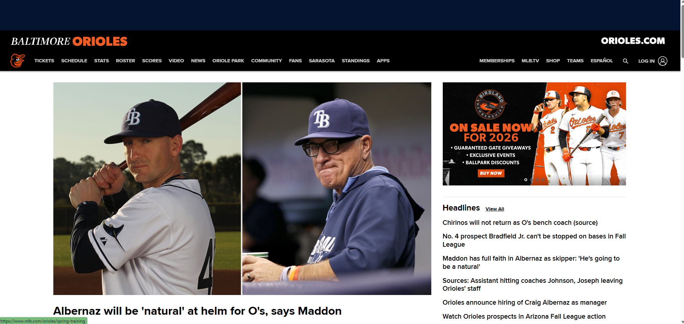

1. URL of the Website
2. Name of the Website
Baltimore Orioles Official Website, also the URL above.
3. Target Audience
The site targets baseball fans, especially Baltimore Orioles supporters, as well local community members interested in team updates and schedules.
4. Site Organization
The website uses a hierarchical structure. The top navigation bar organizes content by categories such as News, Scores, Schedule, Roster, and Tickets. Information is grouped with dropdown menus and easy navigation to its many subpages.
5. CRAP Design Principle Example
The website effectively applies the Alignment principle content is aligned consistently across the grid, keeping text and media neat and easy to scan. It also uses Contrast (like a orange and black color palette) to emphasize headings and calls to action, creating a visually appealing balance.
6. Accessibility Audit Score
The Accessibility Checker Lighthouse shows the website scored a 70 out of 100.
7. Site Effectiveness
The Baltimore Orioles site supports user goals like as finding scores and checking the teams schedule. Important information about team updates and news is visible and organized.
8. Site Efficiency
Users for the site can perform tasks quickly thanks to consistent navigation menus, a search bar, and quick links to major features like “Tickets” and “Stats.” Loading times are fast, and menus are intuitive.
9. Engagement
The site is highly engaging with high-quality photos, videos, and a clean design that fits professional sports branding. It also connects fans with multimedia content and team updates, creating a pleasant experience.
10. Recommendation
One improvement would be to enhance text contrast in some areas (such as orange text on white backgrounds) to improve accessibility for users with visual impairments. Adding more alt text to decorative images could also improve accessibility scores.
Screenshot
Below is a screenshot of the Baltimore Orioles website:
